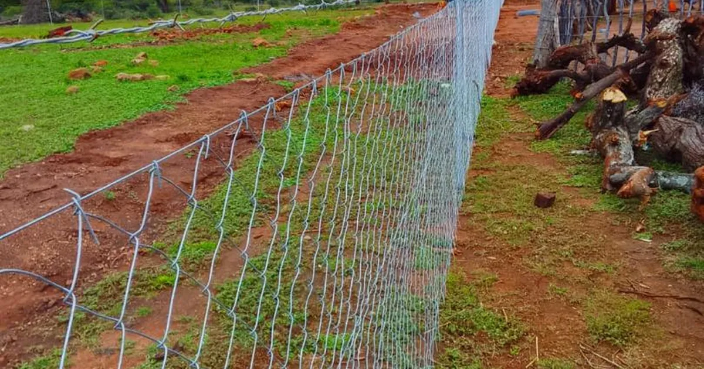
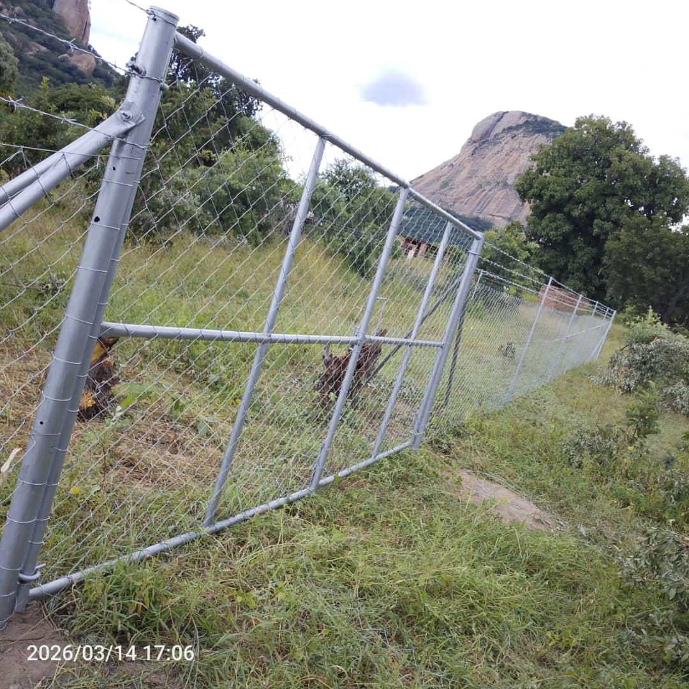

Quick answer
Inspect your boundary every three to four months. Walk the full fence line, test the gate on its own, cut back plants, check the property after dark, look for drainage and erosion damage, then photograph each defect and sort it into urgent, soon or monitor. Fix the cause, such as poor drainage, not just the visible damage.

Why regular boundary checks matter
A fence can still be standing while it is already losing strength, alignment or coverage. In August 2026 the City of Harare reminded property owners that their maintenance duties include boundary walls, fences and access ways, not just buildings. A short inspection every few months keeps small problems small and the property looking cared for.
The checklist
| Check | Look for |
|---|---|
| Fence line | Leaning posts, gaps, broken strands, damaged mesh, loose fixings, rust |
| Walls | Cracks, leaning sections, loose or missing toppings |
| Gate | Grinding, strain, worn hinges or rollers, locks that do not line up |
| Vegetation | Plants pushing on the fence, hiding damage or giving a climbing route |
| Lighting | Dark gates, corners, paths and parking at night |
| Ground | Erosion under the fence, water running along the fence line, pooling at posts |
1. Walk the full perimeter
Do not inspect only from the driveway. Walk the whole fence or wall, from inside and, where it is safe and lawful, from outside. Look for leaning posts or wall sections, gaps and broken strands, loose fixings and corrosion, signs of tampering, and soil washed out from underneath.
2. Test the gate on its own
Open and close it several times. Listen for grinding, check hinges, rollers and the track, and make sure the lock lines up. For an automated gate, test normal operation, safety features and the backup battery. A motor should not be left to cope with a gate that is out of line or hard to move by hand.

3. Check the vegetation
Trees, shrubs and creepers can push against the fence, hide damage, block cameras and give someone a way over. Keep growth under control around gates, posts and the fence line without removing useful privacy. Watch for roots lifting foundations and branches pressing on wire, mesh or electric-fence lines.
4. Look again after dark
Walk the property at night. Note gates, corners, paths and parking areas that disappear into darkness, and check that existing lights still work and still point where they are needed.
5. Check drainage and ground movement
Water running along a fence line weakens footings, washes away soil and speeds up rust. Fix the drainage problem before repairing the damage it causes, or the repair will not last.
6. Record and prioritise what you find
Photograph every defect and sort it into three groups:
- Urgent: an open gap, a failing gate, an exposed access point or a safety risk.
- Soon: rust, loose fixings, drainage problems or plants likely to cause more damage.
- Monitor: minor movement or wear that is not yet affecting the fence.
Your photos make it easy to see whether a crack or leaning post is getting worse, and to explain the job clearly when you ask for a quote.
When to repair and when to replace
Isolated damage, such as a few posts or a section of mesh, can usually be repaired. If rust, sagging and gaps run along most of the fence, replacing the run can cost less over time than repeated repairs. Our guides to diamond mesh and clearview fencing explain the main options, and how to choose a fencing company covers what a good quote should include.
Sources
- The Herald: Harare orders owners to repair dilapidated buildings, 20 August 2026.
- Propertybook: City of Harare Orders Repairs for Dilapidated Buildings, 31 August 2026.
Get a quote from Azzar
Send us your location, what you need and a few photos. We reply with a recommendation and a no-obligation quote, and arrange a free site assessment if one is needed.